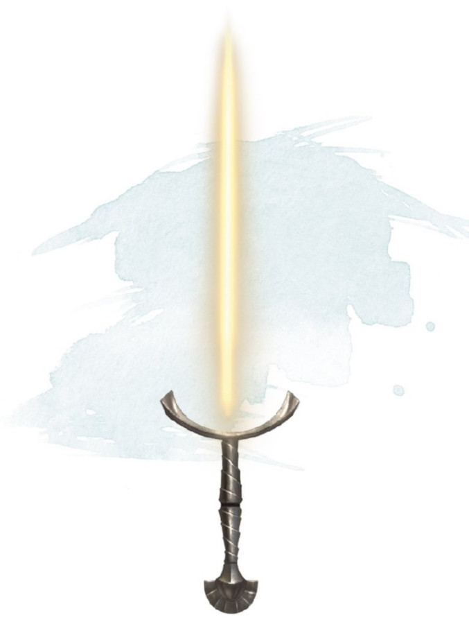

Épée radieuse
[ Sun Blade ]
Arme (épée longue), rare (nécessite un lien)
Cet objet semble être une poignée d'épée longue. Lorsque vous saisissez la poignée, vous pouvez utiliser une action bonus pour faire apparaitre une lame de pure radiance, ou pour faire disparaître la lame. Lorsque la lame est sortie, l'épée longue magique a la propriété finesse. Si vous maîtrisez les épées longues ou courtes, vous maîtrisez l'épée radieuse.
Vous gagnez un bonus de +2 à l'attaque et aux dégâts infligés avec cette arme, qui inflige des dégâts radiants au lieu de dégâts tranchants. Quand vous frappez un mort-vivant avec cette arme, la cible subit 1d8 dégâts radiants supplémentaires.
La lame de l'épée émet une lumière vive dans un rayon de 4,50 mètres et une lumière faible sur 4,50 mètres supplémentaires. La lumière est semblable à la lumière du soleil. Tant que la lame persiste, vous pouvez utiliser une action pour augmenter ou réduire le rayon de lumière vive et de lumière faible de 1,50 mètre chacun, jusqu'à un maximum de 9 mètres ou un minimum de 3 mètres chacun.
Vous gagnez un bonus de +2 à l'attaque et aux dégâts infligés avec cette arme, qui inflige des dégâts radiants au lieu de dégâts tranchants. Quand vous frappez un mort-vivant avec cette arme, la cible subit 1d8 dégâts radiants supplémentaires.
La lame de l'épée émet une lumière vive dans un rayon de 4,50 mètres et une lumière faible sur 4,50 mètres supplémentaires. La lumière est semblable à la lumière du soleil. Tant que la lame persiste, vous pouvez utiliser une action pour augmenter ou réduire le rayon de lumière vive et de lumière faible de 1,50 mètre chacun, jusqu'à un maximum de 9 mètres ou un minimum de 3 mètres chacun.
Dungeon Master´s Guide (SRD)
